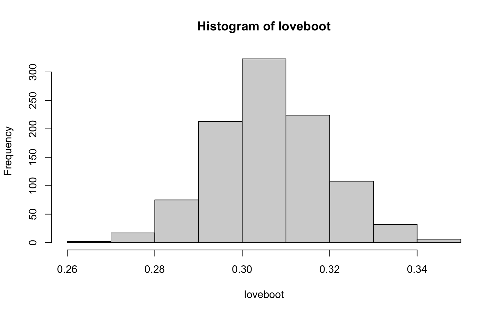

myBigThing = lm(mpg ~ disp, data=mtcars) #something slow
saveRDS(myBigThing, savedPath)
## Later on:
myBigThing <- readRDS(savedPath)6 Tips, Tricks, and Debugging in R
This chapter is a complete hodge-podge of section covers ways of dealing with data, especially messy data you might have for final projects.
6.1 Some miscellaneous advice
So you are starting to learn R. But there’s lots of good tricks you’ll never know about until somebody shows you. Clean code is one such good trick; consider the following: “Your most important collaborator is you from 6 months ago. Unfortunately, you can’t ask that-you any questions, because they don’t answer their email.”
In this section we give a few things that you may find useful, either now or later.
6.1.1 A few random tips
The letter “l” looks like the number “1”—watch out for that. Things like “mylm” are usually all letters, with “lm” standing for linear model.
6.1.2 Quick tips regarding R Markdown report generation
Don’t put “View()” in your Markdown file when loading your csv file. Just put in the read_csv line. Otherwise you will not be able to knit.
If you can’t knit PDFs you need to install latex (tex). Once you do, reboot your computer. If things don’t work, then knit to Microsoft word (or, failing that, html as a last resort), print to pdf, and turn that in. But then ask a teaching fellow to help get things set up, since PDFs make for much more readable reports.
6.1.3 Saving R objects
If you have the result of something that took awhile to run (e.g., a big multilevel model fit to a lot of data) you can try saving it like so:
6.1.4 R style (based on Google style guide)
Try to do the following
- Comment your code!
- Structure of an R file:
- Descriptive comments (including date)
- Load libraries
- Constants and script parameters (# iterations, etc.)
- Functions (with descriptive comment after first line)
- Everything else
- variableName / variable.name, FunctionVerb, kConstantName. not_like_this
- Curly Braces, line breaks: see previous slide
- Consistency: 2-space indents,
y = (a * x) + b + rnorm(1, sd=sigma) - Avoid
attach()
6.1.5 set.seed
If your code uses random numbers, then you should set your seed, which makes your script always generate the same sequence of random numbers.
For example, say your code had this:
tryCatch({(1:(1:10)[rpois(1, 3)])}, error=function(e){(e)}) #works?[1] 1set.seed(97)
tryCatch({(1:(1:10)[rpois(1, 3)])}, error=function(e){(e)}) #fails!<simpleError in 1:(1:10)[rpois(1, 3)]: argument of length 0>(Note the tryCatch() method is a way of generating errors and not crashing.)
Key thing to know: Reproducible results help with debugging.
If you want to get fancy, try this (after installing the `TeachingDemos’ package):
TeachingDemos::char2seed("quinn") # Using your name as a seed says "nothing up my sleeve"6.2 File structure: how not to do it
Ever seen this?
- /My Documents
- my paper.tex
- my paper draft 2.tex
- my paper final.tex
- my paper final revised.tex
- my paper final revised 2.tex
- script.r
- script 2.r
- data.csv
Try instead something like:
- /stat 166-Small Data Analysis
- stat 166.rproj
- /Empty Project
- /code
- /data
- /text
- /figures
- readme.txt
- /HW1
- …
Your readme.txt might have informational notes such as “Got data from bit.ly/XYZ.” to remind you of what you were up to.
Your figures folder should be full of figures you can easily regenerate with code in your code folder.
6.2.1 Making Data Frames
For small datasets, you can type in data the hard way like so:
exp.dat = data.frame( ID=c("a","b","c","d"),
cond = c("AI","DI","DI","AI"),
trial1 = c("E","U","U","E"),
dec1 = c(1,1,0,1),
trial2 = c("U","E","U","E"),
dec2 = c(0,0,0,1),
trial3 = c("U","E","E","U"),
dec3 = c(0,1,0,1),
trial4 = c("E","U","E","U"),
dec4 = c(0,1,0,0) )
exp.dat ID cond trial1 dec1 trial2 dec2 trial3 dec3 trial4 dec4
1 a AI E 1 U 0 U 0 E 0
2 b DI U 1 E 0 E 1 U 1
3 c DI U 0 U 0 E 0 E 0
4 d AI E 1 E 1 U 1 U 0This is for an experiment on 4 subjects. The first and forth subject got the AI treatment, the second two got the DI treatment. The subjects then had 4 trials each, and they received a “E” choice or a “U” choice, and the decision variable is whether they accepted the choice.
As you can see, data can get a bit complicated!
6.2.2 Making sure your data are numeric
Sometimes when you load data in, R does weird things like decide all your numbers are actually words. This happens if some of your entries are not numbers. Then R makes them all not numbers. You can check this with the str() function:
str( exp.dat )'data.frame': 4 obs. of 10 variables:
$ ID : chr "a" "b" "c" "d"
$ cond : chr "AI" "DI" "DI" "AI"
$ trial1: chr "E" "U" "U" "E"
$ dec1 : num 1 1 0 1
$ trial2: chr "U" "E" "U" "E"
$ dec2 : num 0 0 0 1
$ trial3: chr "U" "E" "E" "U"
$ dec3 : num 0 1 0 1
$ trial4: chr "E" "U" "E" "U"
$ dec4 : num 0 1 0 0Here we see that we have factors (categorical variables) and numbers (num). All is well.
If something should be a number, then change it like so:
lst <- c( 1, 2, 3, "dog", 5, 6 )
str( lst ) chr [1:6] "1" "2" "3" "dog" "5" "6"lst <- as.numeric( lst )Warning: NAs introduced by coercionlst[1] 1 2 3 NA 5 6str( lst ) num [1:6] 1 2 3 NA 5 6Note it warned you that you had non-numbers when you converted. The non-numbers are now missing (NA).
For a dataframe, you fix like this:
exp.dat$trial1 = as.numeric( exp.dat$trial1 )Warning: NAs introduced by coercion6.2.3 Merging Data
Often you have two datasets that you want to merge. For example, say you want to merge some data you have on a few states with some SAT information from the mosaic package.
library( mosaicData )
data( SAT )
head( SAT ) state expend ratio salary frac verbal math sat
1 Alabama 4.41 17.2 31.1 8 491 538 1029
2 Alaska 8.96 17.6 48.0 47 445 489 934
3 Arizona 4.78 19.3 32.2 27 448 496 944
4 Arkansas 4.46 17.1 28.9 6 482 523 1005
5 California 4.99 24.0 41.1 45 417 485 902
6 Colorado 5.44 18.4 34.6 29 462 518 980df = data.frame( state=c("Alabama","California","Fakus"),
A=c(10,20,50),
frac=c(0.5, 0.3, 0.4) )
df state A frac
1 Alabama 10 0.5
2 California 20 0.3
3 Fakus 50 0.4merge( df, SAT, by="state", all.x=TRUE ) state A frac.x expend ratio salary frac.y verbal math sat
1 Alabama 10 0.5 4.41 17.2 31.1 8 491 538 1029
2 California 20 0.3 4.99 24.0 41.1 45 417 485 902
3 Fakus 50 0.4 NA NA NA NA NA NA NAThe records are combined by the “by” variable. I.e., each record in df is matched with each record in SAT with the same value of “state.”
Things to note: If you have the same variable in each dataframe, it will keep both, and add a suffix of “.x” and “.y” to indicate where they came from.
The “all.x” means keep all records from your first dataframe (here df) even if there is no match. If you added “all.y=TRUE” then you would get all 50 states from the SAT dataframe even though df doesn’t have most of them. Try it!
You can merge on more than one variable. I.e., if you said \verb|by=c(“A”,“B”)| then it would match records if they had the same value for both A and B. See below for an example on this.
6.2.4 Lagged Data
Sometimes you have multiple times for your units (think country or state), and you want to regress, say, future X on current X. Then you want to have both future and current X for each case.
Here think of a case as a Country at a point in time. E.g., we might have data like this:
dtw = read.csv( "data/fake_country_block.csv", as.is=TRUE )
dt = pivot_longer( dtw, cols=X1997:X2004,
names_to = "Year", names_prefix = "X",
values_to = "X" )
dt$Year = as.numeric( dt$Year )
slice_sample( dt, n=5 )# A tibble: 5 × 3
Country Year X
<chr> <dbl> <dbl>
1 China 2000 3.4
2 England 1999 53
3 China 2003 6
4 Morocco 1997 31.9
5 England 2003 57.3We then want to know what the X will be 2 years in the future. We can do this with the following trick:
dt.fut = dt
dt.fut$Year = dt.fut$Year - 2
head(dt.fut)# A tibble: 6 × 3
Country Year X
<chr> <dbl> <dbl>
1 China 1995 0.5
2 China 1996 1
3 China 1997 2
4 China 1998 3.4
5 China 1999 4
6 China 2000 5.3newdt = left_join( dt, dt.fut,
by=c("Country","Year"), suffix=c("",".fut") )
head( newdt, 10 )# A tibble: 10 × 4
Country Year X X.fut
<chr> <dbl> <dbl> <dbl>
1 China 1997 0.5 2
2 China 1998 1 3.4
3 China 1999 2 4
4 China 2000 3.4 5.3
5 China 2001 4 6
6 China 2002 5.3 7
7 China 2003 6 NA
8 China 2004 7 NA
9 Morocco 1997 31.9 33
10 Morocco 1998 32 34 Here we are merging records that match Country and Year.
Note that for the final two China entries, we don’t have a future X value. The merge will make it NA indicating it is missing.
How this works: we are tricking the program. We are making a new \verb|dt.lag| data.frame and then putting all the entries into the past by two years. When we merge, and match on Country and Year, the current dataframe and the lagged dataframe get lined up by this shift. Clever, no?
Now we could do regression:
my.lm = lm( X.fut ~ X + Country, data=newdt )
summary( my.lm )
Call:
lm(formula = X.fut ~ X + Country, data = newdt)
Residuals:
Min 1Q Median 3Q Max
-0.5869 -0.2610 0.0107 0.2753 0.5137
Coefficients:
Estimate Std. Error t value Pr(>|t|)
(Intercept) 1.8684 0.2128 8.78 2.7e-06 ***
X 1.0179 0.0582 17.48 2.3e-09 ***
CountryEngland -0.8259 2.9704 -0.28 0.79
CountryMorocco -0.7514 1.7603 -0.43 0.68
---
Signif. codes: 0 '***' 0.001 '**' 0.01 '*' 0.05 '.' 0.1 ' ' 1
Residual standard error: 0.351 on 11 degrees of freedom
(9 observations deleted due to missingness)
Multiple R-squared: 1, Adjusted R-squared: 1
F-statistic: 2.13e+04 on 3 and 11 DF, p-value: <2e-166.2.5 Summarizing Data
Sometimes you want to collapse several cases into one. This is called aggregating. If you install a package called “dplyr” (Run install.packages( "dplyr" ) once to install, or better yet simply install tidyverse) then you will have great power.
Using newdt from above, we can summarize countries across all their time points:
newdt %>% group_by( Country ) %>%
summarise( mean.X = mean(X, na.rm=TRUE ),
sd.X = sd( X, na.rm=TRUE ) )# A tibble: 3 × 3
Country mean.X sd.X
<chr> <dbl> <dbl>
1 China 3.65 2.37
2 England 54.6 2.43
3 Morocco 34.0 2.12You can also augment data. Here we subtract the mean from each group:
dshift = newdt %>% group_by( Country ) %>%
mutate( Xm = mean(X, na.rm=TRUE),
Xc = X - mean(X, na.rm=TRUE ) )
head(dshift)# A tibble: 6 × 6
# Groups: Country [1]
Country Year X X.fut Xm Xc
<chr> <dbl> <dbl> <dbl> <dbl> <dbl>
1 China 1997 0.5 2 3.65 -3.15
2 China 1998 1 3.4 3.65 -2.65
3 China 1999 2 4 3.65 -1.65
4 China 2000 3.4 5.3 3.65 -0.25
5 China 2001 4 6 3.65 0.35
6 China 2002 5.3 7 3.65 1.656.3 Troubleshooting in R
By now you have gotten to the point where you can get some really weird errors in R and they can be quite, quite frustrating. This section talks about how to think about fixing them on your own. It also covers some common mistakes that can happen. Say you have some code that does a bootstrap and prints out a histogram. Nothing seems to work and the hist command is giving a strange error.
First step
Put all the commands, start to finish, in your script. The reason for this step is then you know what you are looking at. When scrolling to old commands and trying different things, you can get very tangled up. Anyway, say you do, and you are still getting a strange error:
You might think hist is the culprit, but that might not be true.
First step is to check if you have any strange arguments to hist. Try running hist without any arguments other than the data.
If that doesn’t work (and here it won’t), then the next step is to see what is going on is to look at what you are making a histogram out of!
[1] NaN NaN NaN NaN NaN NaNYou can also look at loveboot by clicking on it in your ‘Workspace’ to see if it is weird. If it has a bunch of NA or NaN then you need to fix your bootstrap code. You are trying to make a histogram out of bad data. Another rule:
Those bad data came from somewhere! Let’s examine what is happening inside your bootstrap.
The easiest way is to run the stuff inside your replicate to get one replicate and see what is going on. This illustrates a very important debugging rule:
The code inside your replicate should run by itself. So try it, looking at the value each time
lovesampmale = sample(lovemale, 1000, replace=TRUE)
head(lovesampmale)[1] 1 1 1 0 1 0 propsampmale = table(lovesampmale)[0]/length(lovesampmale)
propsampmalenamed numeric(0) mean(propsampmale)[1] NaNWe see that the propsampmale line is going wonky. We unpack the pieces
table(lovesampmale)lovesampmale
0 1 2
294 680 26 length(lovesampmale)[1] 1000table(lovesampmale)[0]named integer(0)We finally find the error. We need quotation marks around the 0. Without the quotes, R interprets “[0]” as taking the 0th entry of the table, which doesn’t exist, rather than the entry named “0,” which does1
table(lovesampmale)["0"] 0
294 6.3.1 Aside: the table technique
The “table technique” to calculate the proportion of some list of data that has a given value is dangerous. In particular if that value isn’t present, then the table could drop it, causing some real trouble. Instead use
mean(propsampmale == 0)[1] NaN6.3.2 Code redundancies
Sometimes you don’t need parts of your code at all! The propsampmale has the answer. No need for the final mean in the above code!
6.3.3 Categories should be words
For categories, don’t use numbers. Instead use
lovemale = rep(c("Little", "Some", "Lots"), c(372, 807,34))and then your mean line will be
lovemale = rep(c("Little", "Some", "Lots"), c(372, 807,34))giving your final fixed code (plot not shown):
lovemale = rep(c("Little", "Some", "Lots"), c(372, 807,34))
loveboot = replicate(1000, {
lovesampmale = sample( lovemale, replace=TRUE )
mean(lovesampmale == "Little")
})
hist(loveboot)
Why? Because for a table those things at the top are names and all names are considered words. We denote words in R with quotation marks↩︎